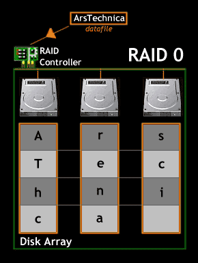
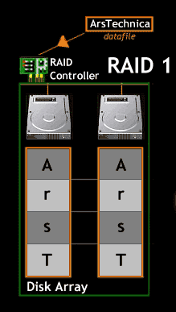
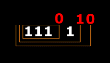
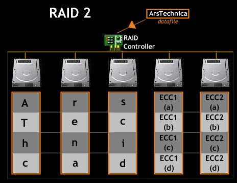
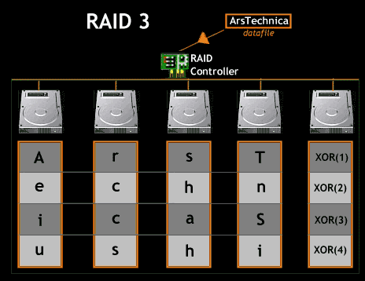
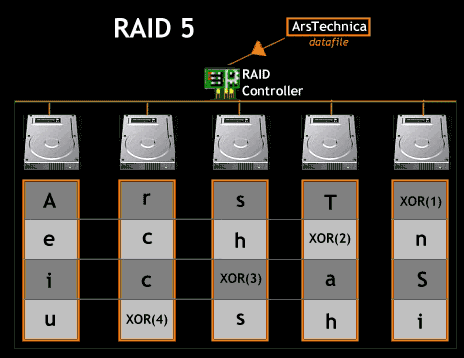
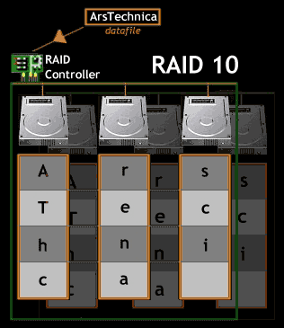

The skinny on RAID
http://arstechnica.com/features/2000/05/raid/
评价一个RAID系统使用下面三个指标:
- capacity. 容量相对N个盘总和变化多少.
- redundancy. 容错性怎么样.
- performance. 读写性能上提升多少.
RAID0

- 容量上没有任何损失.
- 没有实现redudancy.
- 通过并行可提升读写性能.
RAID1

- 因为mirror所以容量减半.
- 用mirror来实现redundancy.
- 通过并行可提升读性能; 写性能和单块磁盘差不多.
写两块磁盘时, 可能会出现不一致的情况. 软件解决方案通常是WAL, 但是这对于RAID硬件系统来说性能是不可接受的. 为此通常RAID1会内置内存以及电池备份, 来确保两份数据一致写入.
One last note: because logging to disk on every write is prohibitively
expensive, most RAID hardware includes a small amount of non-volatile
RAM (e.g., battery-backed) where it performs this type of logging. Thus,
consistent update is provided without the high cost of logging to disk.
RAID2
从RAID2开始就实现了ECC(Error Checking Correction)。检查(check)和correct(纠正)在实现上存在很大差异：对于检查我们只需要判断数据是否正确即可，如果数据错误那么直接报错，而纠正的话在数据出现错误的时候还需要尝试恢复。
以RAID1为例，如果两个disk数据不一致的话那么即检查到错误，但是我们却没有办法纠正数据。对于RAID1来说即使我们有3个或者是更多disk的话，依然没有办法纠正数据(如果AB一致，和C不同的话，我们也不能说AB就是正确的)
两种ECC实现:1)Hamming Code.2)XOR ECC. 下面是4bit数据的hamming code.

对于简单的奇偶校验位的话，我们其实是没有对新产生的奇偶校验位来做奇偶校验的，导致我们只能够对数据出现1bit flip进行检测而不能够恢复。而hamming code需要完成的就是这个工作，通过对奇偶校验位也做奇偶校验，就可以完成1bit flip的恢复。要检测和恢复2bit flip的话, 那么则需要更长的hamming code.

- 容量上有ECC block开销, 并且这个开销还比较大.
- redudancy通过ECC block来完成.
- 通过并行提升读性能.
- 因为每次更新data disk都会更新ECC disk, 所以最终瓶颈会在ECC disk限制扩展性.
RAID3
update@201509: RAID2的ECC应该是特指类似Hamming Code这种具有纠错功能的编码. RAID3和RAID2一样, 但是使用XOR ECC, 只能检错但是不能纠错. 这是在容错性和成本上的trade-off.

RAID5
RAID3中每次写data block都会更新parity block, 而这些更新全部落在parity disk上, 影响performance.
RAID5通过将parity block分摊到各个disk上面来解决这个问题. 速度上基本可以达到RAID0.

RAID5在市场上基本完全代替了RAID4, 因为在大部分应用场景下RAID5要好过RAID4.
但是在一些几乎全部是large-writes的系统里还会使用RAID4, 这种场景下RAID4和RAID5性能相当, 而RAID4在搭建上比RAID5要容易.
Because RAID-5 is basically identical to RAID-4 except in the few cases
where it is better, it has almost completely replaced RAID-4 in the marketplace.
The only place where it has not is in systems that know they will
never perform anything other than a large write, thus avoiding the smallwrite
problem altogether [HLM94]; in those cases, RAID-4 is sometimes
used as it is slightly simpler to build.
RAID10
RAID10=RAID1+0. 数据在多个disk上按照strip方式存储, 每个disk都有mirror disk.
